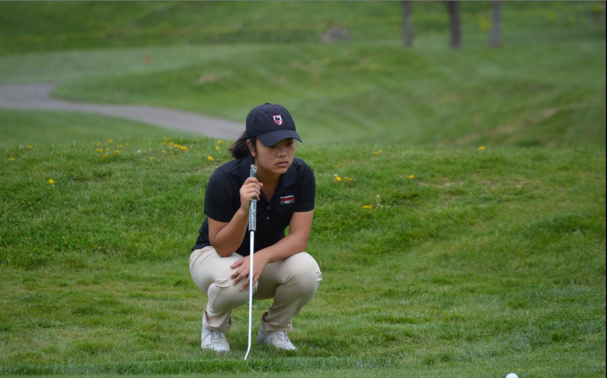
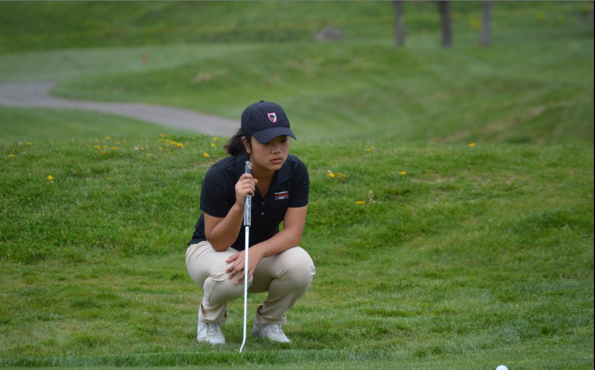

Awards
- May 2016 - Women's Golf Coaches Association Division III All-Region East Team
- April 2016 - Thomas B. Craig & LaVerne Craig Tartan Award
- March 2016 - Division III Eastern College Athletic Conference Player of the Month
- March 2016 - University Athletic Association Champion and All Association First Team
- April 2015 - Thomas B. Craig & LaVerne Craig Tartan Award
- March 2015 - Division III Eastern College Athletic Conference Rookie of the Month
- March 2015 - University Athletic Association All Association First Team